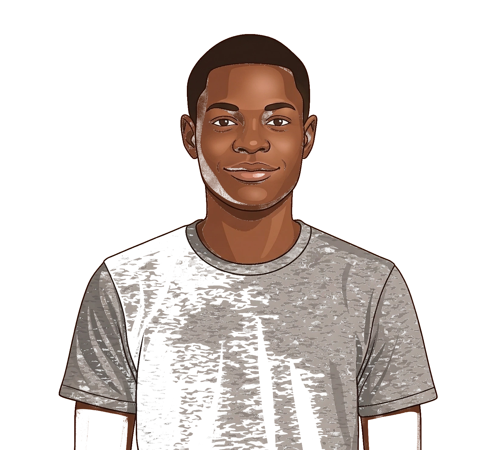
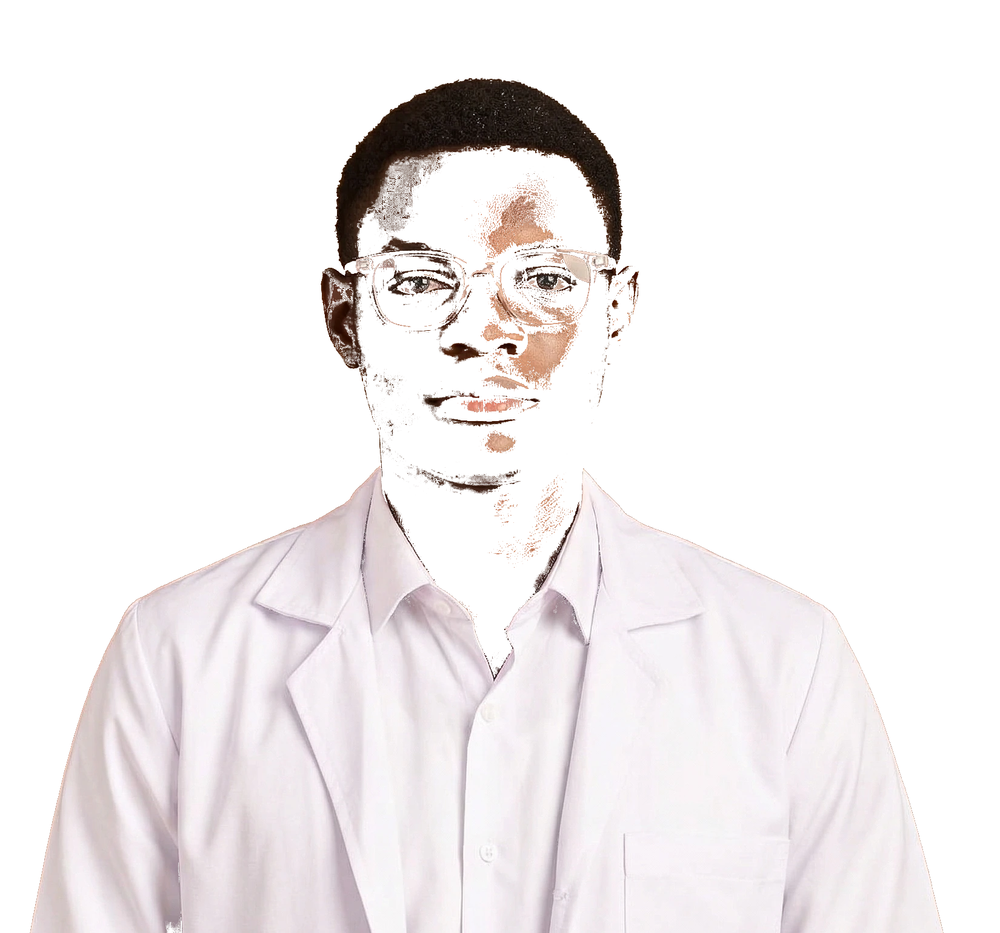

Yo, I’m Samuel.
I spend most of my time around neuroscience, computation, and cognitive systems, trying to understand how thought works and how we might engage with it through technology. I also build things on the side, mostly as a way to explore ideas in motion.
A lot of my work blends different domains; lately, I’ve been thinking about how brain signals can be turned into something interpretable. Outside of that, I’m big on visual art. If you like what I’m doing, come say hi.

